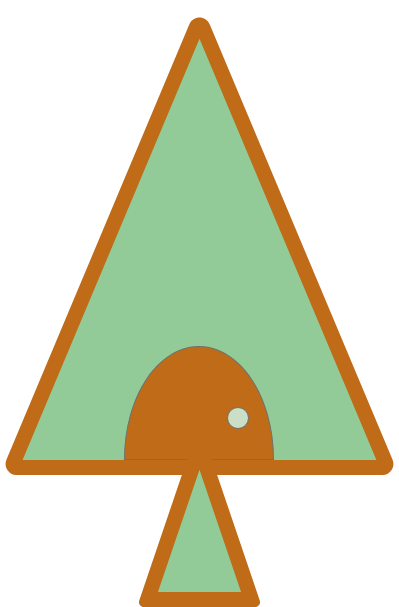

COMORI
COMORI
ー森を、創ろうー

-CONCEPT-
COMORIは京都大学森林科学科の学生2人が立ち上げた小さな学生団体です。
COMORIという名前には「"CO"＝一緒に、"MORI"＝森 の在り方を考えることを通して日本のローカルの在り方を変えていく」という願いが込められています。
私達は、デザインやWEBサービスの開発、情報発信を通じてローカルの価値向上に貢献します。
-WORKs-
木質バイオマスの供給情報共有サービス